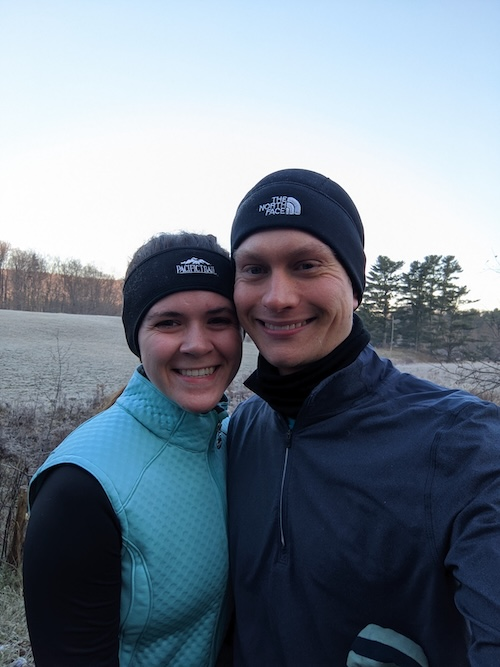
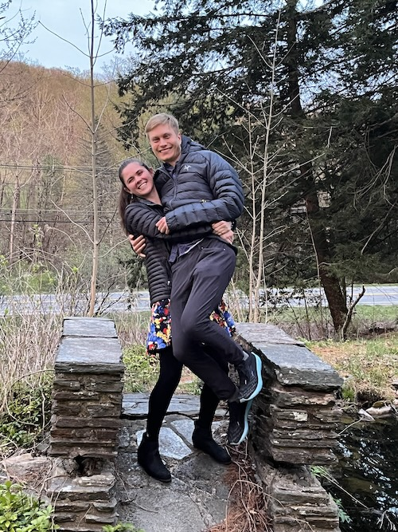
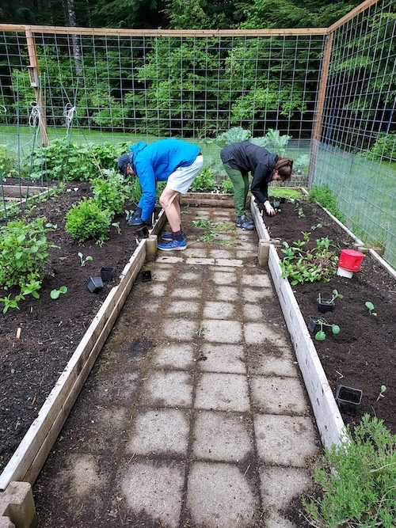

Erik and Kathryn met for their first date on a November Saturday afternoon in 2021 to walk along
the Charles River in Boston. Erik, being who he is, arrived early and waited at the top of the Boston
University Bridge. Kathryn, being who she is, arrived punctually on her bicycle, but struggled to open
her bike lock. She frantically messaged Erik informing him of the situation, terrified he was negatively
judging her for being late. Erik walked down from the bridge and was not helpful with locking up the
bike, admitting that even though his profile said he liked to bike around the city, he did not in fact
own a bike – he clarified it was using rental bikes. The date commenced with some awkward chuckles as
they tried to use the cold bike lock and continued with wonderful conversations of running, science,
hobbies, and family along the river. If anyone asks Kathryn’s mom or sister, Rose, what word she uses to
describe Erik and their time together it is either “wonderful” or “lovely.”
Anniversary of first date walk

One of the many runs together
After the second date of dinner and comedy, Erik and Kathryn texted each other that they liked
each other. After the third date of ice skating, they both felt that something really special was there.
They continued to fall in love through their time together hiking, running, eating vegan foods
(including plenty of non-dairy frozen desserts), spending time with each other’s family, and watching
their favorite TV shows.
Erik proposed on May 4th, 2024, at the Mt Auburn Cemetery in Cambridge, MA. Proposing in a
cemetery might sound weird to some, but this cemetery was one of their early date locations. It is also
a garden cemetery, meaning that there were bountiful blooming trees (Kathryn’s favorite) and lovely
landscapes. Though, if she is being honest, Kathryn also loves cemeteries due to her parents’ efforts to
instill a fascination of visiting historical places and her many happy memories looking for Wheelers in
nearby cemeteries with her former roommate and bridesmaid, Erin. And if Erik is being honest, he loves
Kathryn and her idiosyncrasies. Erik plotted with his siblings for them to be there to document and
experience the happy event.
YES!

First trip to Pownal, VT, together
Erik and Kathryn currently live together in Somerville, which is in Greater Boston. Due to their
weekly Sunday bagel obsession and occasional purchase of avocado toast, they are still renting but hope
to eventually find a more permanent home. They are taking suggestions of places to live long-term
(especially if the suggestions come with funds to help purchase a home or the promise of future
childcare help).
Celebrating Kathryn's PhD Graduation
Zac Brown Band concert at Fenway Park
Hiking on a glacier in Iceland
Supporting Kathryn through hip surgery

Helping in Kathryn's parents' garden